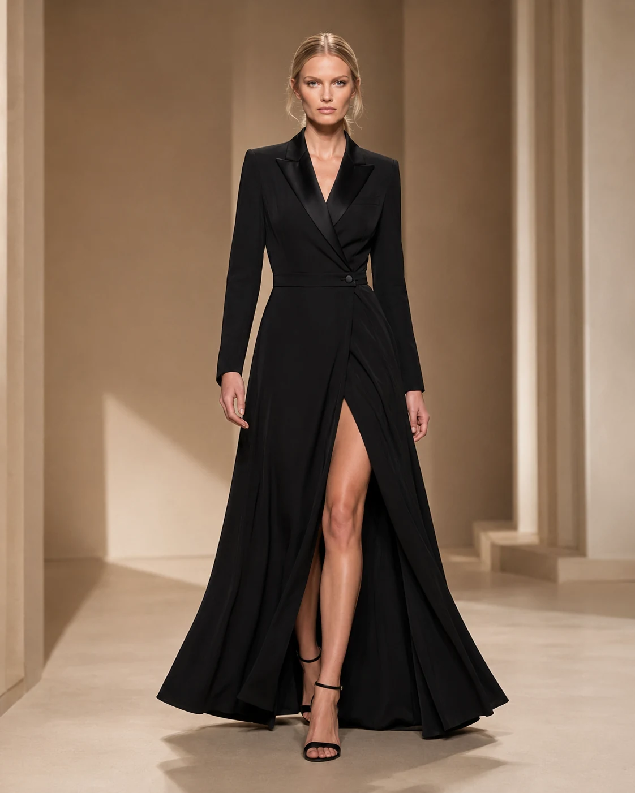
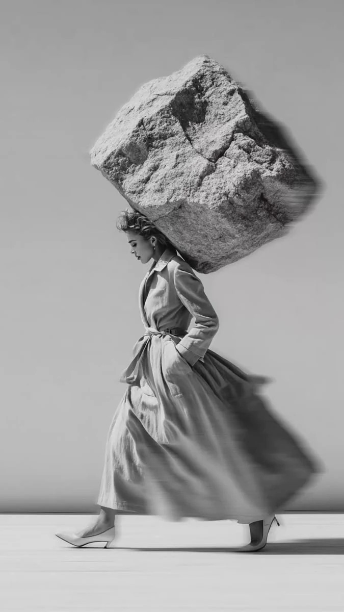
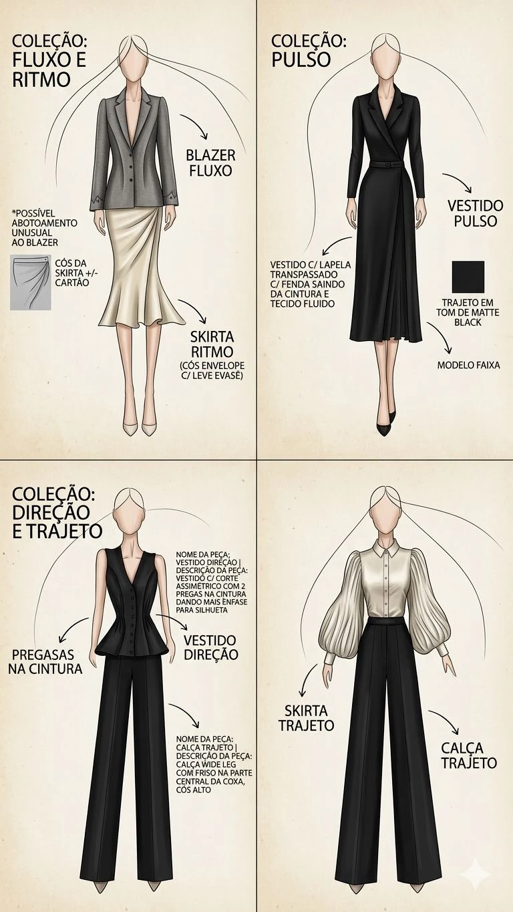
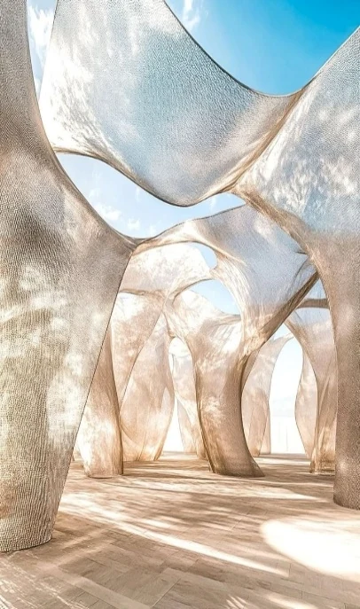
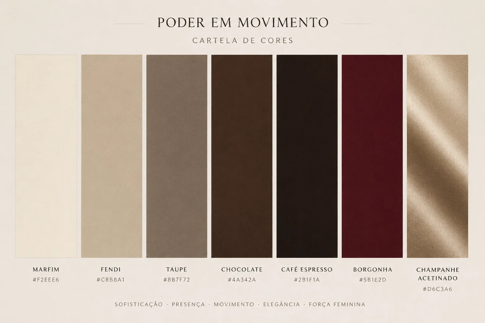
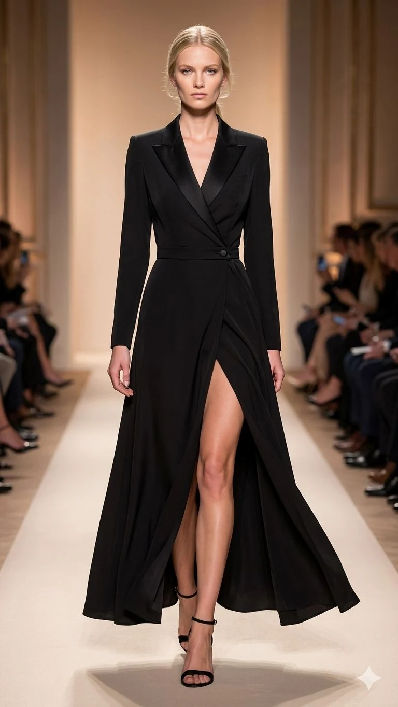
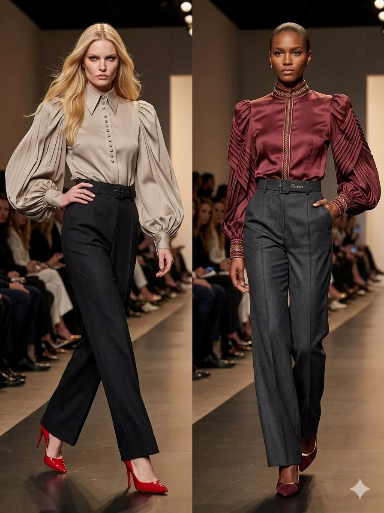
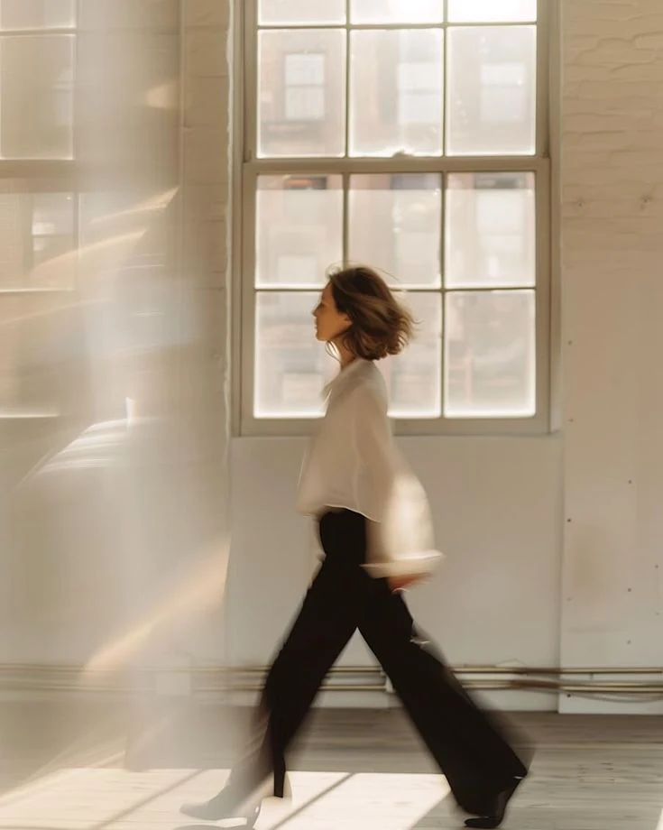
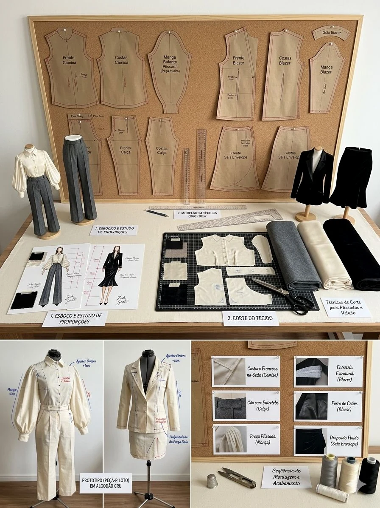

Rigidez
Restrição, excesso e imobilidade como símbolos de poder.
INVERNO 2027 · PODER EM MOVIMENTO
Alfaiataria projetada para acompanhar o corpo sem abandonar a precisão. Estrutura, movimento e identidade em uma coleção de luxo silencioso.

O NOVO PARADIGMA CORPORATIVO

“Uma mulher que não segue o ritmo, mas dá a direção.”
A coleção abandona a armadura rígida e propõe um luxo adaptável. A presença não depende de volume ou excesso, mas da precisão das linhas, do caimento e da confiança de quem veste.
Restrição, excesso e imobilidade como símbolos de poder.
Mobilidade, clareza e força silenciosa em movimento.
DO CROQUI À PRESENÇA
Selecione uma peça para alternar entre o croqui autoral e a projeção realista original, preservando modelo, pose, luz e construção.
Projeções conceituais baseadas nos croquis autorais e nas referências da coleção.
O SISTEMA ZECK SANTOS
As peças foram pensadas como um sistema combinável. A prancha original preserva o desenho, a proporção e a leitura técnica da coleção.

ENGENHARIA INVISÍVEL
Cinco camadas trabalham em conjunto para sustentar a forma e preservar uma leitura limpa.
Selecione uma camada para entender sua função. As cores organizam a leitura técnica, sem alterar a paleta da coleção.
CAMADA 01
A superfície visível protege a construção e define textura, cor e primeira leitura da silhueta.
Fechamento guiado por ímãs integrados, sem botões aparentes.
Microestruturas sustentam o caimento sem repuxar o tecido externo.
Frentes limpas e interrupções visuais reduzidas ao essencial.
INTELIGÊNCIA TÊXTIL
O material não é acabamento. É parte do sistema estrutural e determina como a peça ocupa o espaço.
O CHASSI
Memória de forma, termorregulação e presença sem peso excessivo.
A PAREDE
Caimento elástico, superfície opaca e estrutura para linhas precisas.

O VENTO
Transparência controlada e fluidez que acompanha a cadência do corpo.
CROMATISMO DE AUTORIDADE
A paleta é apresentada por referências originais, sem filtros de cor que comprometam a definição das imagens.
PALETA ORIGINAL
As variações artificiais foram removidas para preservar nitidez, textura, pele, iluminação e integridade das peças. A paleta permanece apresentada pela prancha cromática original.

Construção integral e acabamento preservados.
Estrutura e movimento sem recoloração artificial.
Rigor utilitário em imagem original.
Leveza e alfaiataria na projeção original.
LOOKBOOK EM MOVIMENTO
A forma se confirma no movimento.
Geometria rigorosa e fluidez monumental.
Estrutura precisa sobre movimento acetinado.
Rigor utilitário e amplitude com eixo.
Leveza de seda em contraponto à alfaiataria.

A peça acompanha o corpo sem perder precisão.

Verticalidade e comprimento alongado.

O corpo transforma estrutura em direção.

SOBRE O PROCESSO
ZECK SANTOS investiga a alfaiataria como um sistema vivo. Cada linha tem função, cada camada tem intenção e cada movimento confirma a identidade da peça.
O processo começa no croqui, passa pela precisão da modelagem e encontra no corpo sua forma definitiva. A tecnologia entra como ferramenta de visualização, sem substituir a autoria do desenho.
Solicitar apresentação da coleção ↗CONTATO
Para apresentação privada, imprensa, showroom ou colaboração, envie uma mensagem.